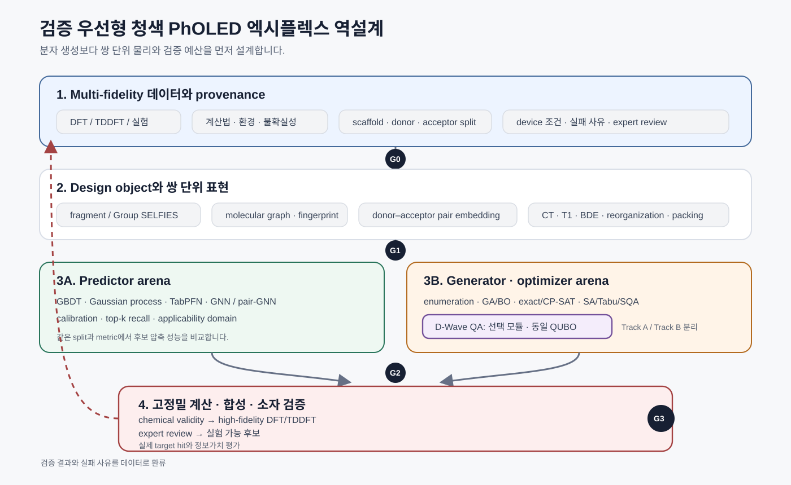
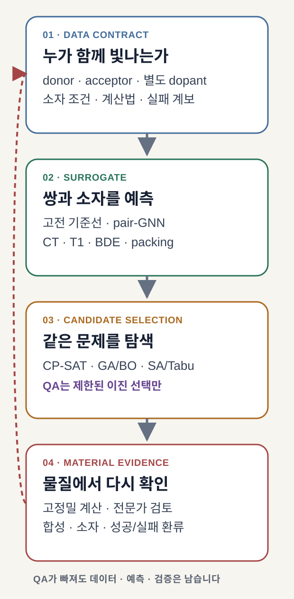
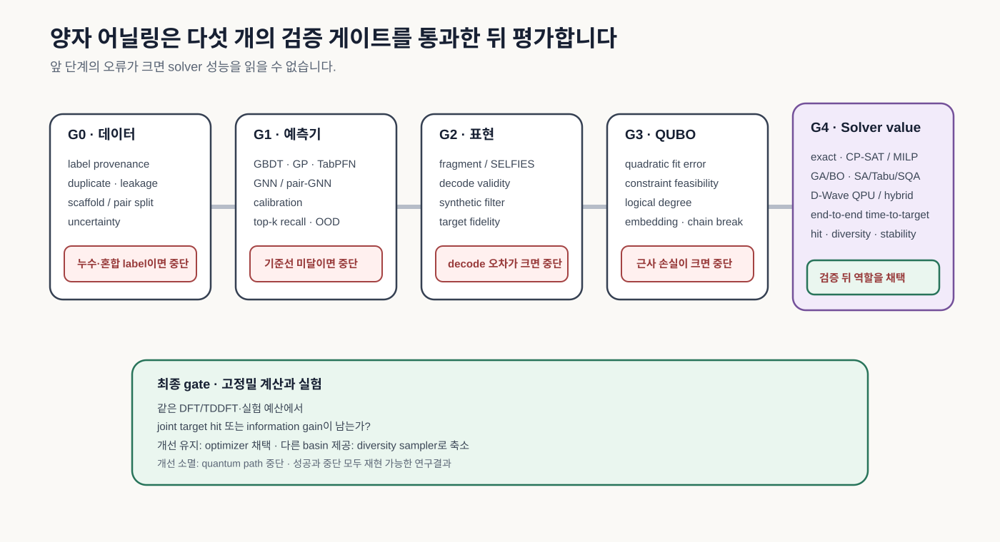
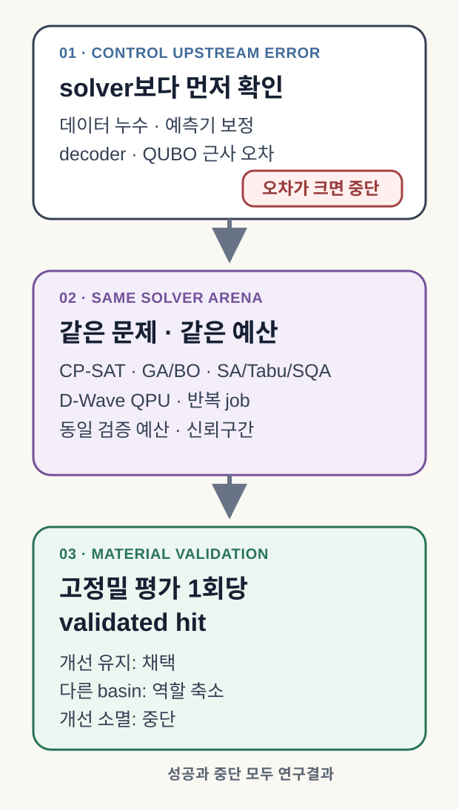

Materials Informatics, 즉 재료정보학의 역설계는 후보를 넣고 물성을 예측하는 정방향 문제를 거꾸로 묻습니다. 원하는 성능과 제약을 먼저 정한 뒤 어떤 조성, 구조와 공정 조건이 그 목표에 가까운지 찾습니다. 이 과정에는 자료의 계보, 분자·재료 표현, 물성 대리모델, 후보 탐색, 고정밀 계산과 실험 검증이 모두 필요합니다.
여기서 말하는 양자 파이프라인은 모든 단계를 양자 알고리즘으로 바꾸는 구상이 아닙니다. 고전 Materials Informatics 폐루프 안에서 QUBO로 제한할 수 있는 후보 선택만 quantum annealing(QA)에 맡기고, 같은 문제를 푸는 강한 고전 탐색과 비교하는 구조입니다. 양자 모듈이 빠져도 데이터와 예측, 검증 자산은 남아야 합니다.
계산 화면에서 좋아 보이는 분자도 OLED 소자 안에서는 빛을 잃을 수 있습니다. 이웃 분자와 전하를 주고받는 방식이 달라지고, 여기상태가 흔들리며, 박막의 배열이 예상과 어긋나기 때문입니다. 높은 삼중항 에너지나 적절한 HOMO/LUMO만으로는 수명과 효율을 함께 설명하기 어렵습니다.
청색 phosphorescent OLED(PhOLED)에서 exciplex는 두 host가 만날 때 생기는 전하이동(charge-transfer) 여기상태입니다. p-type donor host와 n-type acceptor host가 co-host를 이루고, 여기에서 생긴 에너지가 별도의 phosphorescent dopant로 전달됩니다. 2022년 Nature Photonics 연구처럼 실제 소자는 이 세 구성요소와 계면, 전하 균형을 함께 다룹니다. host와 dopant 두 항목만 적은 표현으로는 설계 대상을 정확히 설명하기 어렵습니다.
양자 어닐링의 자리도 이 물리에서 정해집니다. 양자 칩이 후보를 내더라도 설계 가치는 아직 입증되지 않습니다. 데이터와 대리모델, QUBO 근사, 고정밀 계산과 소자 검증을 거친 뒤에도 강한 고전 탐색보다 나은 후보를 남겨야 합니다.
청색 OLED 유즈케이스의 중심 질문 — 쌍과 소자 제약을 데이터 계약·대리모델·후속 DFT·소자 검증으로 관리하는 파이프라인에서, 제한된 이진 후보 선택 QUBO를 푸는 quantum annealing(QA)이 같은 검증 예산으로 최종 기준을 통과한 조합 수를 늘리는가?
청색 OLED는 파이프라인을 시험하는 까다로운 유즈케이스입니다
2018년 npj Computational Materials 연구는 약 6,000개의 DFT 계산 자료에서 blue PhOLED host를 학습했습니다. 40,000번의 생성 시도에서 36,581개의 valid SMILES가 나왔고, 중복과 학습 분자를 제외하면 3,205개의 고유 후보가 남았습니다. 여기서 valid는 RDKit이 문자열을 분자로 해석하고 기본 문법과 Kekulization을 통과했다는 뜻이지, 합성이 쉽거나 소자에서 안정하다는 뜻은 아닙니다.
DFT로 다시 계산했을 때 T1 ≥ 3.00 eV를 만족한 비율은 학습 자료의 36.2%에서 생성 후보의 58.7%로 높아졌습니다. 그러나 세 후보를 실제로 합성하고 측정하자 일부 물성은 계산이 지나치게 낙관적이었습니다. 생성 개수보다 고비용 검증을 끝까지 통과한 후보 수가 더 중요한 이유입니다.
최근 연구는 검증 단위를 더 넓힙니다. 2025년 Science Advances 연구는 약 400개의 MR-TADF 실험 자료에서 deep-blue hyperfluorescent device로 이어졌고, 2025년 Chemical Engineering Journal 연구는 약 1.8×10^7개의 host 후보를 가상 선별한 뒤 blue TADF OLED를 제작했습니다. 2026년 JACS 연구는 p-type host와 exciplex를 이루는 n-type host를 찾고 green phosphorescence-sensitized fluorescent(PSF) OLED에서 검증했습니다.
이 세 사례의 최대 EQE 41.3%, 30.8%, 39.4%는 서로 다른 발광 구조와 색, 소자 조건에서 나온 값이므로 한 줄의 성능 순위로 비교할 수 없습니다. 공통점은 모델의 점수에서 멈추지 않고 합성 또는 소자 제작까지 갔다는 데 있습니다. 양자 탐색의 상대는 이 수치들이 아닙니다. 같은 설계공간·목적함수·검증 예산을 받은 강한 고전 탐색기와 겨뤄야 합니다.

첫 PoC에서 가장 직접적인 설계 대상은 두 가지입니다. 하나는 검증된 p-type donor host와 n-type acceptor host 라이브러리에서 co-host 조합을 고르고, 주어진 dopant·소자 조건에 맞추는 문제입니다. 다른 하나는 알려진 scaffold와 attachment point를 고정한 뒤 치환기를 선택하는 문제입니다. 앞의 문제는 산업적 질문에 가깝고, 뒤의 문제는 이진 QUBO와 탐색 방법을 먼저 검증하기 쉽습니다.
양자 어닐링은 이미 들어왔지만, 역할은 아직 좁습니다
Ajagekar와 You의 2023년 연구는 GraphConv neural fingerprint, conditional restricted Boltzmann machine(CRBM), QUBO와 D-Wave를 한 분자 설계 과정에 연결했습니다. 이 조합 자체는 이미 공개된 선행기술입니다. 적용 대상도 분명합니다. ZINC 12,000개 분자에서 QED, logP와 synthetic accessibility를 다뤘으며, 청색 OLED의 여기상태나 소자 수명을 검증한 연구는 아닙니다.
2026년 Digital Discovery 연구는 고정된 CDDD 분자 표현과 작은 선형 예측기를 QUBO에 연결했습니다. high-QED/low-SAS 조건에서 joint hit은 QA 24.4%, simulated annealing(SA) 15.4%였습니다. 다만 해독된 분자의 validity는 약 52–54%였고, latent space의 목표값과 실제 분자 물성 사이에도 오차가 남았습니다.
같은 논문에서 보고한 9.55±0.63초와 54.65±0.45초는 high-QED/low-SAS 실험 (a)의 분자당 평균 end-to-end 생성시간이며 비교 대상은 QA와 SA입니다. 이를 모든 분자 설계에서의 일반적인 5.7배 양자 우위로 읽으면 안 됩니다. 더 강한 고전 기준선, 다른 문제 크기, 임베딩과 반복 실행을 포함한 재현 실험이 필요합니다.

이번에 확인한 2018–2026년 공개 논문 범위에서 구분할 수 있는 경계는 다음과 같습니다. 체계적 문헌고찰과 특허조사를 마치기 전에는 novelty로 확정하지 말고 검증할 차별화 가설로 다루는 편이 안전합니다.
| 이미 확인된 선행기술 | 검증할 차별화 가설 | 아직 주장할 수 없는 것 |
|---|---|---|
| blue OLED host inverse design | donor/acceptor co-host와 별도 dopant·소자 조건의 공동 설계 | quantum advantage |
| CRBM·QUBO·D-Wave molecular design | 계산법·환경·실패 사유를 보존하는 데이터 계약 | 생성 후보의 소자 성능 |
| 고정 표현·경량 예측기·QA | 같은 검증 예산의 classical/QA 비교 | 자동 합성 폐루프 구현 |
한 후보가 계산에서 소자까지 가는 길
설계 대상이 정해지면 데이터 계약부터 고정합니다. donor와 acceptor, dopant, 계산법, 용매·고체 환경, 측정 온도, 소자 적층과 실패 사유를 한 행의 계보로 묶어야 합니다. 서로 다른 조건에서 얻은 에너지를 하나의 label처럼 섞으면, 뒤의 모델이 정교해도 solver 차이를 읽기 어렵습니다.
표현 방법은 목적에 맞게 제한합니다. SELFIES는 semantic constraint 안에서 해독 가능한 molecular graph를 만들도록 돕지만 합성 가능성, 광화학 안정성이나 exciplex 형성을 보장하지 않습니다. 첫 실험에는 known scaffold와 attachment point를 가진 fragment grammar가 더 해석하기 쉽습니다.
예측 단계에서는 GBDT·Gaussian process·TabPFN을 작은 표 데이터의 기준선으로 두고, GNN 또는 pair-GNN이 분자 그래프와 pair interaction에서 실제 이득을 주는지 확인합니다. 대리모델이 실험을 대신해 최종 판정을 내리지는 않습니다. 비싼 DFT·TDDFT와 소자 검증에 보낼 후보를 줄이는 데 사용합니다.
탐색 단계는 두 갈래로 분리합니다. Track A는 물리 정보를 담은 quadratic surrogate로 pair 또는 치환기 선택 QUBO를 만들고 고전 solver와 QA를 비교합니다. Track B는 discrete latent CRBM의 negative-phase sampling에서 CD·PCD·parallel tempering과 QA를 비교합니다. 두 질문을 한 번에 섞지 않아야 OLED 설계의 개선과 sampler 자체의 개선을 구분할 수 있습니다.


이 구조에서 QA는 교체 가능한 선택 모듈에 해당합니다. 역할을 이렇게 제한하면 양자 경로가 실패해도 데이터와 대리모델, 검증 루프가 그대로 남습니다.
같은 검증 예산에서 양자와 고전을 겨룹니다
D-Wave Advantage2의 Zephyr topology는 연결성을 높였지만 fully connected logical QUBO는 물리 qubit에 그대로 들어가지 않습니다. 공식 solver 속성 문서와 minor-embedding 설명처럼 logical variable은 물리 qubit chain으로 바뀝니다. 문제 크기와 함께 graph degree, chain length와 break, coefficient precision, programming·readout·unembedding 시간을 기록해야 합니다.
고전 solver에는 같은 초기 seed 집합과 tuning budget을 적용할 수 있습니다. QPU에는 같은 random seed를 강제하는 대신, 같은 sample/read budget과 gauge schedule, 반복 job 수를 정하고 신뢰구간을 보고합니다. anneal time과 전체 time-to-target도 나눠 기록해야 하드웨어 시간과 orchestration 비용을 동시에 볼 수 있습니다.
첫 비교의 주 지표는 고정밀 평가 1회당 validated joint hit으로 사전 등록하는 편이 좋습니다. 보조 지표로 diversity-adjusted hit, information gain, feasibility, 반복 안정성과 전체 시간을 둡니다. exact enumeration이나 CP-SAT/MILP가 가능한 작은 문제, genetic algorithm·Bayesian optimization, SA·Tabu·simulated quantum annealing, D-Wave QPU와 hybrid solver가 같은 목적함수와 제약, 평가 예산을 사용해야 합니다.
Boltzmann sampling은 별도 실험입니다. PRX Quantum 2022 연구는 세 세대에 걸친 여덟 대의 이전 양자 어닐러를 noisy Gibbs sampler 관점에서 분석했습니다. 이 결론을 Advantage2에 그대로 옮기지 말고 effective temperature, gauge, 분포 충실도와 classical refinement를 다시 보정해야 합니다.


첫 PoC는 실패해도 답이 남도록 설계합니다

8주 계산 PoC는 기능 구현 일정보다 양자 모듈의 유지 여부를 판단하는 실험에 가깝게 구성합니다.
| 기간 | 확인할 질문 | 남겨야 할 산출물 |
|---|---|---|
| 1–2주 | 무엇을 고르고 어떤 label을 믿을 것인가 | design object, provenance, scaffold/pair split |
| 3–4주 | 작은 데이터에서 어떤 대리모델이 보정되는가 | 고전 기준선, pair-GNN 비교, uncertainty |
| 5–6주 | QUBO 근사보다 solver 차이가 큰가 | enumeration·CP-SAT·SA·Tabu·SQA 결과 |
| 7–8주 | QPU 차이가 재계산 뒤에도 남는가 | 반복 job, 신뢰구간, 고정밀 재검증, 중단 판단 |
진행 조건은 단순합니다. out-of-family split에서도 예측기 보정이 유지되고, QUBO의 optimum이 해독과 재계산 뒤에도 같은 방향을 가리키며, 같은 고정밀 계산 예산에서 QA의 validated joint hit 개선이 반복되어야 합니다. QA가 다른 low-energy basin을 제공하지만 최고 성능을 높이지 못하면 diversity sampler로 역할을 줄일 수 있습니다.
반대로 QUBO 근사, embedding 또는 decoder 오차가 solver 차이보다 크거나 강한 고전 탐색기가 일관되게 우수하면 quantum path를 중단합니다. 이때 남는 classical-first 파이프라인과 실패 원인도 완전한 연구 결과입니다. 첫 실험의 목표에는 어느 경로를 버려야 하는지 답하는 일까지 포함됩니다.
이 연구가 지금 서 있는 곳
김현중 외 SID 2024 논문은 DFT로 만든 blue TADF 여기상태 자료를 GNN이 학습해 물성을 예측하고, 역설계 전략을 뒷받침하는 연구입니다. 생성 후보의 합성이나 PhOLED 소자 검증까지 수행한 연구는 아닙니다. DFT·excited-state analysis와 GNN 연구 경험은 이번 파이프라인의 데이터와 예측 단계를 설계할 근거가 됩니다.
2026년 개인 제안은 이 기반을 blue PhOLED co-host 조합, 별도 phosphorescent dopant와 선택적 양자 최적화로 넓힙니다. QUBO 문제정의와 D-Wave 학습 이력은 PoC를 시작할 준비에 해당합니다. 반면 blue PhOLED QA pipeline, VQE label, quantum advantage, 생성 후보와 자동 합성 폐루프는 아직 검증된 성과가 아닙니다.
현재 증거에 맞는 표현은 다음과 같습니다.
DFT·양자화학으로 OLED의 여기상태와 구조–물성 관계를 분석하고, 이를 blue TADF의 GNN 기반 물성예측과 역설계 전략으로 발전시킨 경험이 있습니다. 이 기반 위에서 청색 PhOLED용 donor/acceptor co-host 조합과 dopant·소자 조건을 데이터 계약과 대리모델로 관리하고, 제한된 후보 선택에서 고전 최적화와 양자 어닐링을 비교하는 검증형 PoC를 설계하고 있습니다.
공개본에는 연구 질문, 공개 논문, 데이터 계약, 비교 방법과 중단 규칙을 남길 수 있습니다. 회사 내부 분자 구조, 물성 DB, 합성경로, 소자 recipe, 공급사, aging 결과와 미공개 IP는 분리해야 합니다.
이 아이디어의 가치는 D-Wave로 분자를 만들었다는 장면에서 나오지 않습니다. 어떤 물리를 데이터와 검증이 맡고, 어느 정도로 작아진 선택 문제만 QA에 건네며, 언제 양자 경로를 중단할지를 미리 정하는 데 있습니다. 재검증에서 차이가 사라지면 고전 파이프라인을 남기면 됩니다. 차이가 반복해서 유지된다면, 그때 비로소 양자 어닐링이 청색 PhOLED 설계의 구체적인 병목을 줄였다고 말할 수 있습니다.
참고문헌
- Kim et al., Machine Learning Strategy Towards Inverse Design of Blue TADF Emitter
- Kim et al., Deep-learning-based inverse design model for intelligent discovery of organic molecules
- Krenn et al., SELFIES
- Sun et al., Exceptionally stable blue phosphorescent OLEDs
- Vuffray et al., Programmable Quantum Annealers as Noisy Gibbs Samplers
- Ajagekar and You, Molecular design with automated QC-based deep learning and optimization
- Kim et al., Machine learning-driven deep-blue MR-TADF molecular design
- An et al., Blue OLED hosts via deep learning and high-throughput virtual screening
- An et al., ML-guided high-triplet exciplex hosts
- Deguchi and Taki, Property-agnostic molecular inverse design via quantum annealing
- Hollmann et al., TabPFN
- D-Wave Advantage2 solver properties
- D-Wave minor embedding
작성 정보
- 작성자: 김현중
- 최초 작성: 2026-07-11 · 내용 및 시각 개정: 2026-07-12
- 출발 자료: 개인 CV와 공개 논문, 청색 PhOLED 역설계 PPTX·기술수요 제안, 기존 Deep Research 산출물
- 주요 검증 자료: peer-reviewed 1차 논문과 D-Wave 공식 문서
- 시각 자료: 관계를 설명하는 원본 편집 일러스트레이션 4종과 재구성한 결정론적 SVG 2종